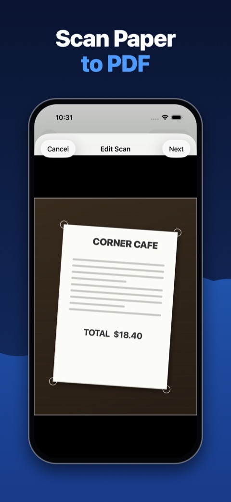

How to scan a document to PDF on iPhone
You don't need a scanner. Your iPhone camera can make a clean, straight PDF of any paper page.
Updated November 2026
Free way: Notes or Files
- In Notes, open a note, tap the camera or paperclip button and choose Scan Documents. In Files, tap ••• at the top and choose Scan Documents.
- Hold the phone over the page. It finds the edges and takes the picture.
- Scan more pages if you need to, then tap Save.
This is a good scanner. Where it falls short: it is hard to add the scan into a PDF you already have, or to mix it with other files in a set order.
Scan and combine: PDF Merge
- Open PDF Merge and choose to scan. Edges are found for you.
- Add your scanned pages next to existing PDFs or photos.
- Put the pages in order and save everything as one PDF.

Tips for a sharp scan
- Use daylight or a bright room, and avoid your own shadow on the page.
- Put the paper on a dark, plain surface so the edges stand out.
- Hold the phone flat above the page, not at an angle.
- For a signed form, scan it after signing so the signature is part of the PDF.
Common questions
Can I scan several pages into one PDF?
Yes. Keep scanning page after page, and they are saved together as one document.
Can I sign the scanned document on my iPhone?
Yes. PDF Merge lets you fill in forms and add your signature, text and notes.